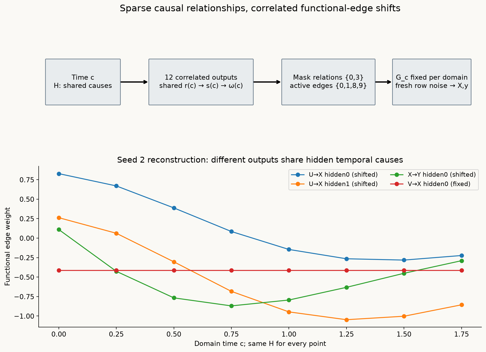
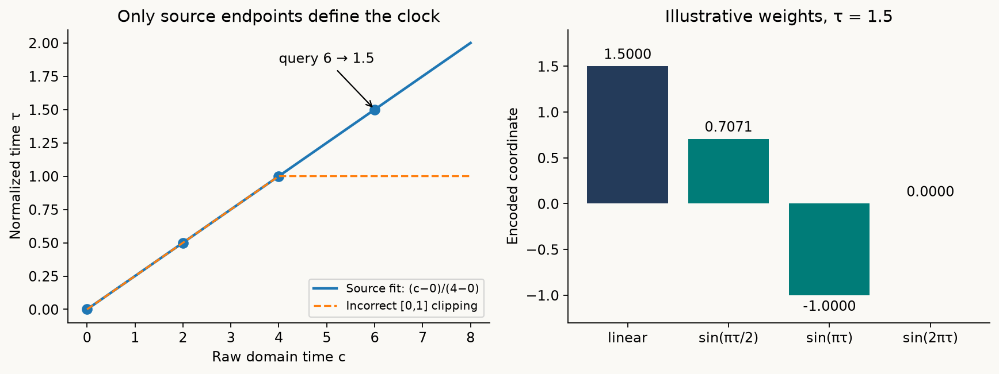
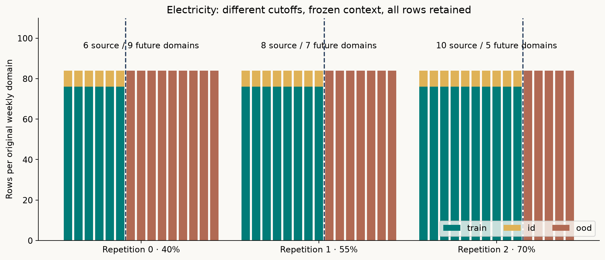
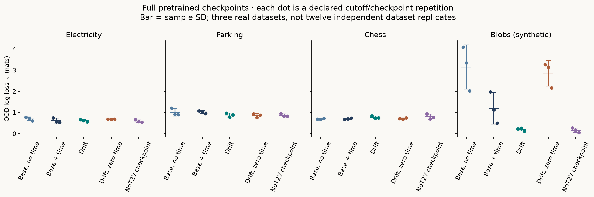
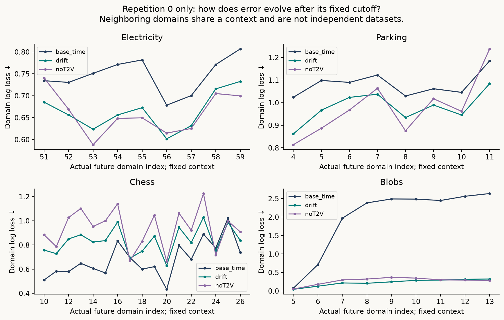
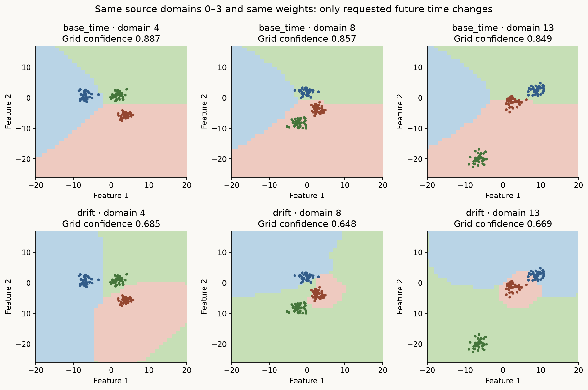
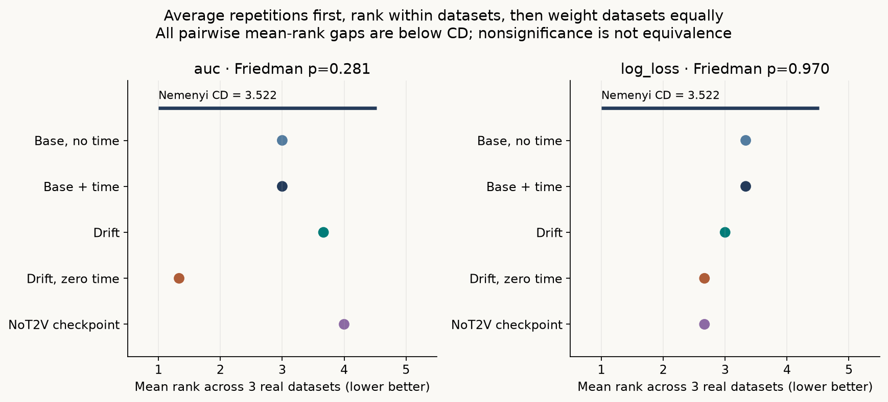

Year 2 · Quarter 3 · Lesson 068
Drift-Resilient TabPFN: learn how relationships change
See the idea · then trace the details
Drift-Resilient TabPFN: time enters the prior and the input
The model practices tasks whose relationships change across domains.
1Generate changing mechanisms
Shared graph; mechanisms evolve across domains
The pretraining generator creates related domains with changing mechanisms. A temporal prior is a modeling assumption, not a guarantee about every real drift process.
2Encode the domain coordinate
Source-fitted time transform → feature/time inputs
The released route pairs a domain coordinate with feature inputs. Query coordinates use the source-fitted transformation, including extrapolation when necessary.
3Read earlier labeled domains
Source-domain context + later query → prediction
The model predicts from the permitted labeled context. Future labels are not memory, and the domain split remains part of the evidence contract.
Pause and predict: Can a source-fitted time transform map a later query beyond the source coordinate range?
Yes. That is extrapolation, not evidence that the transformation should be refit using future labels or outcomes.
Answer: Yes. That is extrapolation, not evidence that the transformation should be refit using future labels or outcomes.
Retrieve before reading
The argument of this lesson
Extrapolation needs an assumption about how tasks change
Temporal splits made future evaluation explicit; local contexts changed which evidence a predictor reads. Drift-resilient PFNs ask how historical evidence should be interpreted when the relationship itself evolves. The explanation connects a prior over changing mechanisms, a domain-clock encoding, and a frozen predictor evaluated on future domains.
The task: extrapolate a learning problem¶
In plain terms. Most evaluations ask, "does the model do well on data like what it has already seen?" This lesson asks a harder question: "can the model notice that the world is changing and project that change forward?"
A sales conversion model trained through June may face a changed July relationship between lead activity and purchase. Holding out June rows estimates performance on the observed mixture. It does not establish whether the model can recognize a changing relationship and use its trend in July. For the relational mission, this distinction appears whenever customers, products, policies or measurements evolve. Even a point-in-time correct feature join can feed a prediction rule that has become stale.
Your outcome. By the end you will trace how a temporal prior generates changing relationships; reconstruct the complete released Drift-Resilient TabPFN forward pass; and measure future-domain predictions with frozen historical contexts. You will implement five live operations, compare actual pretrained checkpoints, and explain a negative result without changing the evaluation after seeing it.
Retrieve before reading. Before reading, retrieve three ideas in writing.
- What information may a query use in a PFN context?
- Why does a temporal split answer a different question from a random split?
- How can two predictors have identical accuracy but different log loss?
The lab assumes matrix multiplication, sample standard deviation and softmax; each operation is restated below.
Built with TabPFN. Original weights and the visible re-expressed implementation use the supplied license. Read Helli et al., NeurIPS 2024, §§3–4 and Appendices A.4–A.8, alongside the pinned original implementation. The full paper and appendices were audited.
Scope check. The release contains the evaluator, benchmark generators and seven real checkpoints; the original synthetic pretraining-prior generator was not found in that release.
What shifts, and what is observed?¶
In plain terms. "Shift" is not one thing. The features can move, the class balance can move, or the rule linking features to labels can move. Naming which one you mean keeps the rest of the lesson precise.
One row, three parts. One row is (x, y, c): a feature vector, class label and ordered domain index. A domain is a period or ordered group within which we approximate the data distribution as stable. Prediction receives source rows (X_context, y_context, c_context) and a new (x_query, c_query). It does not receive future labels. The target is p(y_query | x_query, c_query, context), with future domain indices beyond those observed in context.
The three kinds of shift.
| Shift | What changes | What remains fixed in this special case |
|---|---|---|
| Covariate | Distribution of X | P(Y given X) |
| Label or prior-probability | Class prevalence P(Y) | P(X given Y) |
| Concept | P(Y given X) | P(X) may remain fixed |
Scope check. Here “prior-probability shift” concerns class prevalence, not the PFN’s prior over whole generating mechanisms. Real data can combine these changes. An edge change does not automatically identify the shift category after variables are hidden and marginalized.
Worked example: a rotating boundary. For a simple concept shift, let Y = 1[X1 + a(c) X2 > 0]. If a(c) grows from zero to one while the feature distribution stays fixed, the decision boundary rotates. A historical mixture fit may place one compromise boundary through all periods. A temporal model may infer a trajectory and condition the boundary on the requested period.
Scope check. But two trajectories can agree on all observed domains and diverge tomorrow. Extrapolation requires an assumption; timestamp encoding does not make the future uniquely identifiable.
The prior: a graph changes through another graph¶
Naming the shifted distribution tells us what may differ. The temporal prior goes further: it specifies how related domains can differ coherently. A second graph changes selected relationships of the base graph, supplying a learnable extrapolation assumption.
In plain terms. The training data is invented by two graphs. One graph builds each dataset's cause-and-effect structure. A second graph reads the clock and slowly rewrites the first graph's weights, so the relationships drift over time in a coherent way.
What an SCM is. An SCM, or structural causal model, generates variables through a directed acyclic graph. Each variable depends on its parents and sampled noise. The paper represents a causal variable by scalar subnodes, then expands parent-to-child assignments into hidden scalar computations. A causal relationship can therefore correspond to several functional edges, or neural weights.
The base graph G¶
The lab’s paper-grounded reconstruction has causal variables U, V, X and Y. U and V are noise roots. X has parents U and V; Y has parents U and X. X is computed through two hidden units:
hX0 = tanh(w0 U + w2 V + ε2)
hX1 = tanh(w1 U + w3 V + ε3)
X = w4 hX0 + w5 hX1 + ε4.
Y has two more hidden units using U and X, followed by its output. The target is 1[Y > 0]; observed features are U, V and X. All eight scalar nodes are explicitly computed. Each of twelve functional edges has a source, destination and causal-relationship ID.
Scope check. This fixed declared topology is an inspectable expansion, not the paper’s unpublished graph-sampling distribution.


Predict before tracing. If only U→X and X→Y shift, may the V→X weights change? No. Selecting sparse relationships means applying a mask through the edge-to-relationship mapping. It does not mean sampling unrelated masks over arbitrary weight coordinates. Our relationship IDs [0,0,1,1,-1,-1,2,2,3,3,-1,-1] and selected IDs [0,3] activate only coordinates 0, 1, 8 and 9. The hidden-to-output edges marked −1 stay fixed in this reconstruction.
The drift graph H¶
A second randomly generated nonlinear graph H receives time and emits a vector of shifts. In the visible reconstruction, time drives five shared hidden causes, then four nonlinear causes, then twelve outputs:
r(c) = tanh(c A + b); s(c) = sin(r(c) W); ω(c) = 0.6 s(c) V.
A, b, W and V are sampled once per generated dataset. They are not resampled independently at each time or row. Outputs share hidden causes, making temporal shifts correlated. The update is
w_e(c) = w_e(base) + 1[relation(e) is selected] ω_e(c).
Scope check. The additive update, activation choices, noise scale and topology above are explicit reconstruction choices. Algorithm 1 specifies a second-order SCM and a weight update; the release does not establish these exact hyperprior choices. We do not call this a reproduction of the original sampler.
Worked example. A coherent numerical trace uses reconstruction seed 2. Base w0 = 0.1891 becomes 0.8277 at domain-time 0 and −0.1455 at domain-time 1. The V→X coefficient w2 = −0.4131 remains fixed. In the first row at time 0, U = 1.4285, V = −0.6676, X’s hidden values are 0.9017, 0.9544, and X = 2.6814 after noise. Y’s hidden values are −0.1612, 0.9475; its continuous output is −0.5573, hence class 0. Values are rounded from the saved trace.
The timescales matter¶
The timescales matter. H generates one weight vector per domain. G_c stays fixed while many rows receive fresh noise. Only after sampling the dataset do we create context/query tasks. Resampling H independently per row would remove the coherent changing mechanism that time is meant to identify. The lab saves H parameters, masks, node values, weight trajectories and actual checkpoint predictions for three reconstructed tasks. Its shifted_weights TODO changes the generated data and the measured predictions.
Pretraining learns the inference rule¶
In plain terms. Pretraining does not learn one dataset. It practices on millions of synthetic drifting tasks until the network's fixed weights encode a general rule for predicting under shift. At prediction time nothing is trained.
The training objective. A PFN trains on many synthetic supervised tasks. Some labels become context inputs; held-out labels become targets. A schematic objective is
E_task [ − Σ_query log q_θ(y_query | X_context, y_context, c_context, x_query, c_query) ].
The expectation covers graphs, mechanisms, time domains and row noise. Gradient descent changes transformer parameters θ. It does not optimize the sampled graph H: H generates tasks.
Scope check. With sufficient capacity and suitable optimization, this expected-loss training approximates posterior prediction under the chosen synthetic prior. That interpretation is conditional on the prior and approximation quality, not a correctness guarantee for a new real process.
The scale of the offline training. The original base and drift models each processed 30,720,000 synthetic datasets over 30 pretraining epochs. The paper describes three retrainings and eight GPUs per pretraining job; Appendix A.3 reports roughly seven/eight days for the variants. These are offline development costs. At prediction time the learned weights stay fixed and in-context computation supplies predictions without gradient updates. This lab loads every tensor of those original checkpoints.
Scope check. Original pretraining is NOT_RUN here.
What the contribution is, and is not. The main contribution is broader than adding time. A baseline with time can represent a temporal relationship, but its inference rule was pretrained on a different task distribution. Comparing base-with-time and drift-with-time tests the released packages under a matched wrapper.
Scope check. It does not isolate every pretraining choice individually.
Time2Vec: preserve extrapolation, then encode the clock¶
Synthetic pretraining can teach temporal inference only if the forward model receives the requested domain. Time normalization and encoding connect the clock to the feature tokens; they do not independently guarantee a correct trend assumption.
In plain terms. Before the model can use time, it rescales the clock. The trick is to rescale using only the past, so that a future timestamp is allowed to land beyond the training range instead of being squashed back into it.
Rescaling time without erasing the future¶
The drift encoder rescales time using the source-context minimum and maximum. A query can map beyond [0,1].
Worked example. Source times [0,2,4] and query time 6 give τ = (6−0)/(4−0) = 1.5. Including the query in range fitting would instead map it to 1, erasing its distance beyond the source endpoint. The source clips extreme normalized times to [−5,6], not [0,1].
The degenerate case. If all source times equal 3, the source uses denominator 1: query time 4 maps to 1 and time 100 clips to 6. This avoids division by zero, but supplies no observed temporal trend.
Scope check. It is a degenerate case, not evidence of learning a trend from one period.


What Time2Vec computes¶
Time2Vec applies a learned affine phase a_j = ω_j τ + φ_j to 100 coordinates. Coordinate 0 stays linear; coordinates 1–99 use sine. The linear channel can represent a trend; sinusoidal channels supply learned periods/phases. Neither guarantees seasonal stability.
Worked example. An illustrative four-coordinate encoding with weights [1, π/2, π, 2π] and zero phases maps τ=1.5 to [1.5, 0.7071, −1, 0]. These four weights teach arithmetic; the actual model uses all 100 learned coordinates.
How time enters the tokens. The release repeats that 100-vector for every feature group and concatenates it with two numeric coordinates before a 102→192 projection. It does not make a separate time token.
Scope check. An original forward comment describes a separate token; the executed repetition/concatenation and the checkpoint’s 102-column weight matrix determine the implemented architecture.
Model architecture: complete released checkpoint¶
Follow that encoding into the actual released network. Time coordinates join each feature pair rather than forming a separate time token. The target still receives labeled historical evidence through the same explicit source/query boundary.
Follow the arrows by block number. Branches are separate paths; numbers identify blocks, not a mandatory execution order.
1 TrainingBase structural graph G
relationships generate X, y · selected edges may drift
2 TrainingDrift graph H(time)
coherent changes to G weights · sample ordered-domain tasks
3 TrainingQuery likelihood loss
learn weights across tasks · freeze released θ for inference
Endpoint of this pictured path.
4 ComputationDomain c → Time2Vec
1 linear + 99 sine coordinates · normalize clock using context
5 ComputationTime in every pair
[2 values; 100 time coords] · 102 → 192; add group identity
6 ComputationTarget encoder
context y; query label hidden · 2 → 192 target token
7 Computation12 axial blocks
feature attention → row attention · FFN; residual + LN each time
8 Input / readoutQuery target → head
192 → 768 → 10 · keep K logits → softmax
Endpoint of this pictured path.
Complete released Drift checkpoint: 12 axial blocks, d=192. The prior path is paper-grounded reconstruction; the original pretraining generator is unavailable in the release.
See the whole solution
Drift-resilient PFN: time conditions a learned inference rule
Trace before reading: Is Time2Vec a separate token, and does it alone establish useful extrapolation?
Read every component and connection as text
- Base structural graph G: relationships generate X, y; selected edges may drift. Connects to Drift graph H(time).
- Drift graph H(time): coherent changes to G weights; sample ordered-domain tasks. Connects to Query likelihood loss.
- Query likelihood loss: learn weights across tasks; freeze released θ for inference.
- Domain c → Time2Vec: 1 linear + 99 sine coordinates; normalize clock using context. Connects to Time in every pair.
- Time in every pair: [2 values; 100 time coords]; 102 → 192; add group identity. Connects to 12 axial blocks.
- Target encoder: context y; query label hidden; 2 → 192 target token. Connects to 12 axial blocks.
- 12 axial blocks: feature attention → row attention; FFN; residual + LN each time. Connects to Query target → head.
- Query target → head: 192 → 768 → 10; keep K logits → softmax.
↔ On narrow screens, scroll horizontally to see all branches. The text route above reflows to your screen.
Pictured scope. Complete released Drift checkpoint: 12 axial blocks, d=192. The prior path is paper-grounded reconstruction; the original pretraining generator is unavailable in the release.

In plain terms. This loads the whole released checkpoint, every tensor. Follow the data as it turns raw feature columns and a timestamp into ten class logits, one numbered step at a time.
The symbols, once. Let B count datasets in a batch, T=C+Q their rows, F their numeric columns, and G=ceil(F/2) their groups. C labels are provided; Q are withheld. Follow the whole computation:
- Group and normalize. Pad F to an even number and group adjacent columns in pairs. Flatten groups into the batch axis for preprocessing. Pack varying coordinates first, impute missing values with source means, standardize with the source sample standard deviation plus
1e−6, clip to ±100, and multiply bysqrt(2 / active_coordinates)before padding back to two. Numeric NaN flags are disabled in these checkpoints. - Encode groups and time. Drift concatenates 100 time coordinates and two numeric values, then projects 102→192 with bias. Separately pretrained NoT2V concatenates one normalized time coordinate and projects 3→192. Base projects 2→192. Add a group identity drawn as a 48-dimensional Gaussian vector and projected to 192 with checkpoint weights.
- Encode labels. Context classes are contiguous ordinal IDs. Query labels are censored, imputed for a value channel, and accompanied by missing flag −2. The ordinal encoder ranks values relative to observed classes. A query may therefore have value 1 and flag −2, distinguished from observed class 1 by its flag. A 2→192 projection makes one target token per row. Query targets are absent from the model’s forward signature.
- Repeat twelve blocks. State shape is B×T×(G+1)×192. Six-head attention first mixes feature-group and target tokens within each row. Row attention then mixes rows separately at each token position. Source rows attend to source rows. Query rows use source keys/values only, sharing the first key/value head across six query heads; source attention keeps all six. A bias-free 192→768→192 GELU MLP follows. Every sublayer adds its residual before non-affine LayerNorm, epsilon
1e−5. - Read the query target. Select Q target-token states; apply a biased 192→768→10 GELU head. Keep K observed-class logits and softmax. Softmax maps scores z to
exp(z_k)/Σ exp(z_j). Our matched wrapper uses temperature 1 for every arm.
Scope check — a disclosed query-dependent edge case. Source constant/active-coordinate checks inspect all supplied rows despite training-only comments. Mean/variance fitting still uses context rows. We preserve and disclose that query-dependent edge case rather than silently changing it and claiming parity. Our wrapper resets a recorded nonzero seed before each call for the group-identity vector; raw original calls otherwise advance the generator.
The attention scale. Attention computes softmax(Q Kᵀ / sqrt(32)) V: a weighted average of value vectors. The head width is 192/6=32. The active original Torch ≥2 branch uses the exact inverse-square-root scale; the older fallback rounded that scalar. Our final operator matches the active branch. Query features enter their own row’s feature attention, but query rows never become memory keys. All twelve layers and every learned tensor are loaded, including time, group identity, label encoder and head. Full source checks compare input tokens, every block and logits across all three variants and both float32/float64 fixtures.
Decide the experiment before opening results¶
A temporal mechanism suggests several tests, but they answer different questions. Freeze domains, legal historical context and checkpoint variants before reading scores. A zero-time intervention is not equivalent to a separately pretrained no-Time2Vec model.
In plain terms. Before seeing any result, fix exactly which data, cutoffs, and comparison arms you will use. Locking this down first is what keeps a negative result honest.
The datasets¶
The author panel uses exact released dataset preparation and full datasets: Electricity (1,260 rows, 5 features), Parking Birmingham (1,294, 4), Chess (533, 9), and Intersecting Blobs (1,680, 2). Every processed feature, label, domain and column name matches the original loader. Numeric category codes are retained. The first three are real data; Blobs is a separate synthetic mechanism probe.
How each clock is defined. Electricity uses weekly groups after every-fourth-half-hour selection and a fixed 15-week segment; the executed code uses one week despite a nearby two-week comment. Parking predicts occupancy quartile at one specified car park with week as its domain. Chess groups twenty sorted games to approximate progress; this clock compresses irregular elapsed time. Blobs has three moving classes over fourteen domains.
Scope check. Appendix A.7.2.1 calls it binary in one sentence but then describes three classes; the release and this lab use three. Age bins and house-build years in the broader paper roster are ordered proxies, not automatically deployment-time forecasting tasks.


The split¶
We predeclare source fractions 0.40, 0.55 and 0.70 of ordered domains, rounded down to whole domains. Context stays frozen before each boundary. Ten percent of each source domain (floor, at least one) is held out as ID test. All remaining future domains are OOD test. Their labels never enter prediction calls. Seeds 0, 1, 2 choose source holdouts and pair with original base/drift checkpoints 1, 2, 3 and group-vector seeds 17, 18, 19. All rows are retained in the final panel.
Scope check. The capped and rounded-scale pilots retain separate evidence/operator identities. These repetitions vary cutoff, holdout and pretrained initialization together. Sample SD describes those declared repetitions; it neither separates variance components nor estimates uncertainty across independent datasets. Only NoT2V checkpoint 1 is released, so it is reused. Some ID slices lack a class: accuracy and log loss remain defined, but full-class AUC is unavailable. We do not retry labels into a more convenient ID sample.
The five arms¶
| Arm | Context/data | Learned package | Question |
|---|---|---|---|
| base_no_time | Historical context, no time | Original base checkpoint | Historical mixture baseline |
| base_time | Same context, time appended | Same base checkpoint | Does ordinary time access help? |
| drift | Same context, separate domain input | Original drift checkpoint | Does the temporal package help? |
| drift_zero | Same features, all times zero | Same drift checkpoint | Sensitivity to clock information? |
| noT2V | Same context, normalized scalar time | Separately pretrained checkpoint 1 | Available training ablation behavior? |
Scope check. Zero-time still passes through learned Time2Vec biases. It is not the paper’s NoT2V training ablation. Base-with-time changes feature grouping, as the original baseline strategy does; it is a package contrast, not a surgical prior-only intervention.
Scope check. The paper uses three random eligible cutoffs, with 30–80% of both domains and samples in the source portion, class-coverage checks/retries, and three model initializations per split. Our deterministic fractions do not claim that full selection contract or factorial replication. Original preprocessing was selected on twelve validation datasets. The released
best_distuses robust preprocessing plus original features, fingerprints, 32 feature/class-shuffled views, 99% sample subsampling, outlier setting 7, temperature 0.9 and fp16.best_baseuses a different selected recipe and temperature 0.75. Our raw numeric, one-view, fp32, temperature-1 comparison has no preprocessing search or class retries: INCOMPARABLE to reproducing paper Tables 1/2 or Figure 5.
What the published experiment establishes¶
In plain terms. The paper's own numbers live here, kept separate from anything measured locally. Note that the real-data advantage is much smaller than the synthetic one.
The paper’s published means are separate from every local number below. On eight synthetic tasks, Table 1 reports OOD accuracy 0.754 for drift versus the strongest baseline 0.665. On ten real tasks those means are 0.736 versus 0.712. The real-data AUC difference is much smaller: 0.822 versus the strongest baseline 0.820.
Scope check. Stronger synthetic improvements do not establish a comparably large real-data advantage.
The Time2Vec ablation. Table 2 compares drift with the separately pretrained NoT2V ablation: OOD accuracy 0.744 versus 0.742 and AUC 0.832 for both. The authors describe the Time2Vec contribution as statistically insignificant; this is why the lesson emphasizes the shifting prior. These results use the original selected recipes and repetitions.
Scope check. “Strongest baseline” can select different packages for different metrics, so this summary is not a pure prior-only causal intervention. See Tables 1–2 and Appendix A.4.1 for the reported uncertainty and exact comparator settings.
Read the measured probabilities behind each prediction¶
In plain terms. Accuracy alone hides how confident a model was. These figures pair each prediction with its probability so you can see confident mistakes, not just counts.
Predict before revealing. Before revealing results, predict whether drift must beat base-with-time on every real task, and whether confidence must fall monotonically into the future. Commit a direction and reason. The mechanism allows exceptions to both claims.
| Dataset | Arm | OOD accuracy ± SD | OOD AUC ± SD | OOD log loss ± SD |
|---|---|---|---|---|
| blobs | base_no_time | 0.4910 ± 0.0868 | 0.6398 ± 0.0158 | 3.1463 ± 1.0432 |
| blobs | base_time | 0.5961 ± 0.2934 | 0.7758 ± 0.1988 | 1.1951 ± 0.7433 |
| blobs | drift | 0.9487 ± 0.0406 | 0.9965 ± 0.0058 | 0.2019 ± 0.0714 |
| blobs | drift_zero | 0.4448 ± 0.0961 | 0.6241 ± 0.0787 | 2.8558 ± 0.6079 |
| blobs | noT2V | 0.9908 ± 0.0026 | 0.9998 ± 0.0001 | 0.1573 ± 0.1091 |
| chess | base_no_time | 0.7197 ± 0.0115 | 0.7860 ± 0.0306 | 0.6947 ± 0.0214 |
| chess | base_time | 0.7158 ± 0.0360 | 0.7872 ± 0.0337 | 0.7033 ± 0.0294 |
| chess | drift | 0.6762 ± 0.0540 | 0.7577 ± 0.0346 | 0.7721 ± 0.0537 |
| chess | drift_zero | 0.6947 ± 0.0146 | 0.7872 ± 0.0313 | 0.7101 ± 0.0330 |
| chess | noT2V | 0.6483 ± 0.0535 | 0.6358 ± 0.2443 | 0.8016 ± 0.1218 |
| electricity | base_no_time | 0.6435 ± 0.0573 | 0.7730 ± 0.0451 | 0.6979 ± 0.0882 |
| electricity | base_time | 0.6456 ± 0.1547 | 0.7492 ± 0.0541 | 0.6135 ± 0.1161 |
| electricity | drift | 0.6616 ± 0.0480 | 0.7467 ± 0.0602 | 0.6096 ± 0.0550 |
| electricity | drift_zero | 0.6343 ± 0.0086 | 0.7625 ± 0.0148 | 0.6843 ± 0.0047 |
| electricity | noT2V | 0.6773 ± 0.0577 | 0.7403 ± 0.0763 | 0.5924 ± 0.0595 |
| parking | base_no_time | 0.4725 ± 0.1848 | 0.8012 ± 0.0429 | 1.0072 ± 0.1754 |
| parking | base_time | 0.5101 ± 0.0589 | 0.8327 ± 0.0208 | 1.0233 ± 0.0675 |
| parking | drift | 0.6644 ± 0.0559 | 0.8496 ± 0.0255 | 0.8757 ± 0.0961 |
| parking | drift_zero | 0.6866 ± 0.0170 | 0.8653 ± 0.0175 | 0.8521 ± 0.0908 |
| parking | noT2V | 0.7119 ± 0.0336 | 0.8507 ± 0.0253 | 0.8686 ± 0.0702 |
The complete-model panel is mixed on real data. On Chess, drift worsens mean OOD accuracy from base-with-time 0.7158 to 0.6762 and log loss from 0.7033 to 0.7721. On Parking it raises accuracy from 0.5101 to 0.6644 and lowers loss from 1.0233 to 0.8757, but zeroing time improves the drift checkpoint further (accuracy 0.6866, loss 0.8521): clock sensitivity is not uniformly beneficial. Electricity illustrates metric disagreement: drift slightly improves accuracy (0.6456 to 0.6616) and log loss (0.6135 to 0.6096), while AUC falls from 0.7492 to 0.7467. Blobs is much stronger evidence for extrapolating this synthetic mechanism: drift accuracy 0.9487 versus base-with-time 0.5961; zero-time falls to 0.4448. The separately pretrained NoT2V checkpoint reaches 0.9908 on Blobs, supporting the distinction between the temporal prior and Time2Vec without isolating pretraining variance. These are local matched-wrapper results, not the paper benchmark. Across three real datasets the mean drift-minus-base-time log-loss gap is -0.0276, with a coarse dataset-bootstrap 95% percentile interval [-0.1476, 0.0688]. Three datasets cannot support a broad superiority conclusion; the bootstrap cannot invent unseen tasks.


The metrics, defined. Accuracy is the fraction whose highest-probability class is correct. AUC measures class-score ranking; multiclass AUC averages one-versus-rest class AUCs when every class is present. Log loss averages −log(probability of the true class), penalizing confident wrong predictions. Giving the true class 0.9 costs 0.105 nats; giving it 0.1 costs 2.303. Accuracy cannot distinguish a wrong 0.51/0.49 decision from a wrong 0.99/0.01 decision.


Reading the horizon plots. The horizon plots hold repetition 0’s context and checkpoint fixed. Each point scores only one future domain. Error need not grow smoothly: domains differ in prevalence and difficulty, and sample sizes are finite. These points diagnose where the model helps or fails; they are not independent dataset replications.


Reading the boundary figure. The boundary figure uses original Blobs data, fixed source domains 0–3, checkpoint 1 and a fixed 36×36 grid at domains 4, 8 and 13. Colors encode predicted class. Weights never change between panels. A changed boundary comes from conditioned inference, not later labels or gradient steps.
Scope check. The matched wrapper differs from published Figure 5: this is fresh evidence, not a reproduction claim.
A nonmonotonic confidence trace. On the fixed grid, drift mean maximum-class confidence is approximately 0.685, 0.648 and 0.669. It is lower than the corresponding base values but rises again at the last horizon. This contradicts a universal claim that uncertainty always grows with elapsed time.
Scope check. It is not a calibration measurement: grid points form an artificial spatial measure, and calibration needs outcomes under a defined distribution.


Reading the ranks. Average repetitions within each dataset, then rank methods within that dataset. The real-task aggregate weights Electricity, Parking and Chess equally; Blobs is separate.
Scope check. The displayed Friedman/Nemenyi calculation is exploratory on only three datasets. The paper’s Figure 10 instead uses Wilcoxon-Holm comparisons on its larger benchmark. Rows, seeds and domains cannot become extra independent datasets to manufacture narrower uncertainty.
Diagnose a failure and design the next experiment¶
In plain terms. When a prediction is wrong, find the earliest computation that diverged. The list below maps a symptom to the stage most likely responsible.
Localize the earliest changed computation. Find the earliest changed computation. Wrong query time suggests context-plus-query range fitting or [0,1] clipping. Wrong input tokens with correct numeric z-scores suggest packing, concatenation, target censoring or group-RNG state. Correct input followed by a first-block discrepancy suggests attention axes, first-head query K/V sharing, scaling, or pre-norm versus post-norm. Correct logits with changed scores suggests temperature, class axis, row IDs or metric definitions.
Scope check. Source correspondence covers the tested path. It does not establish exact historical library execution, original prior sampling/training, optimized 32-view inference, or paper-score reproduction. The reproduction contract provides executable smoke, full local and broader routes with precise remaining paper work. Original and live notebook identities stay separate; EXIT records the actual current implementation and run.
How it relates to earlier lessons. Lesson 064 exposed alternating feature/row attention, while Lesson 066 used a column→row→in-context prediction pipeline. This released temporal model also uses a two-axis transformer, but its new assumption comes from changing task mechanisms and a domain-conditioned encoding. Efficient representation and reliable drift extrapolation answer different questions; sharing an attention pattern does not confer the latter.
Combining with retrieval. LoCalPFN chooses a local context and fine-tunes model weights. This model learns a temporal inductive bias during pretraining, then holds weights and historical context fixed while conditioning on the requested domain. Combining them may help, but nearest-neighbor selection may also erase older domains needed to infer a trend. A useful next experiment varies history length at a fixed prediction horizon, with the same checkpoint and test rows, before adding adaptation.
Teach back. Explain why H generates a prior rather than acting as the deployed forecaster; why a relationship mask differs from one arbitrary edge; why normalized query time 1.5 is legitimate; and why zero-time sensitivity differs from NoT2V pretraining. Use one actual negative real-task result and the nonmonotonic confidence trace to limit your conclusion.
Scope check. Bring EXIT and your explanation to the tutor; notebook completion alone is not mastery evidence.